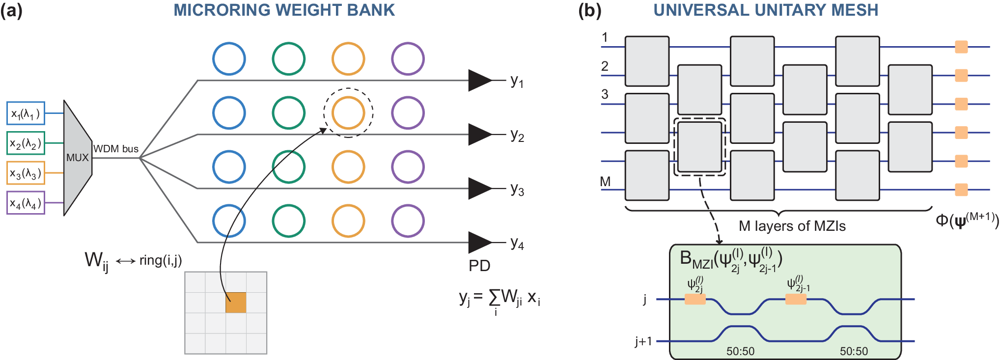
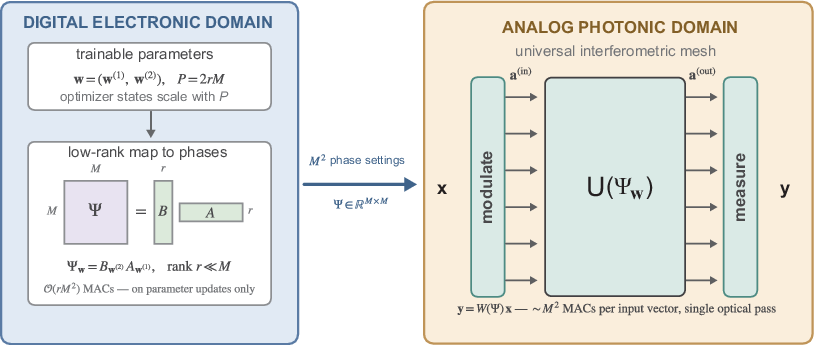
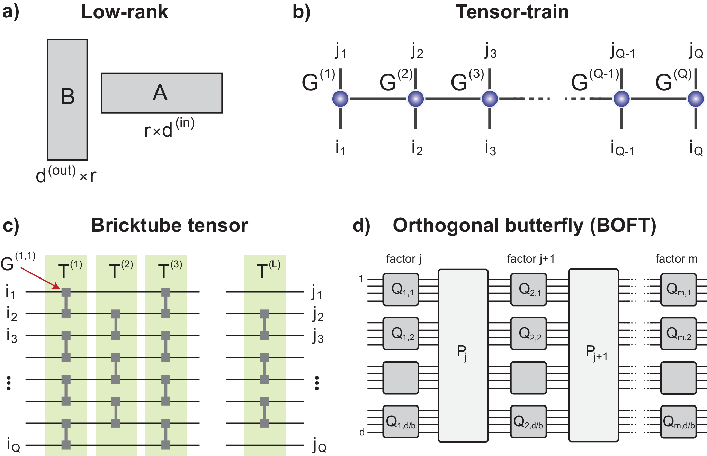
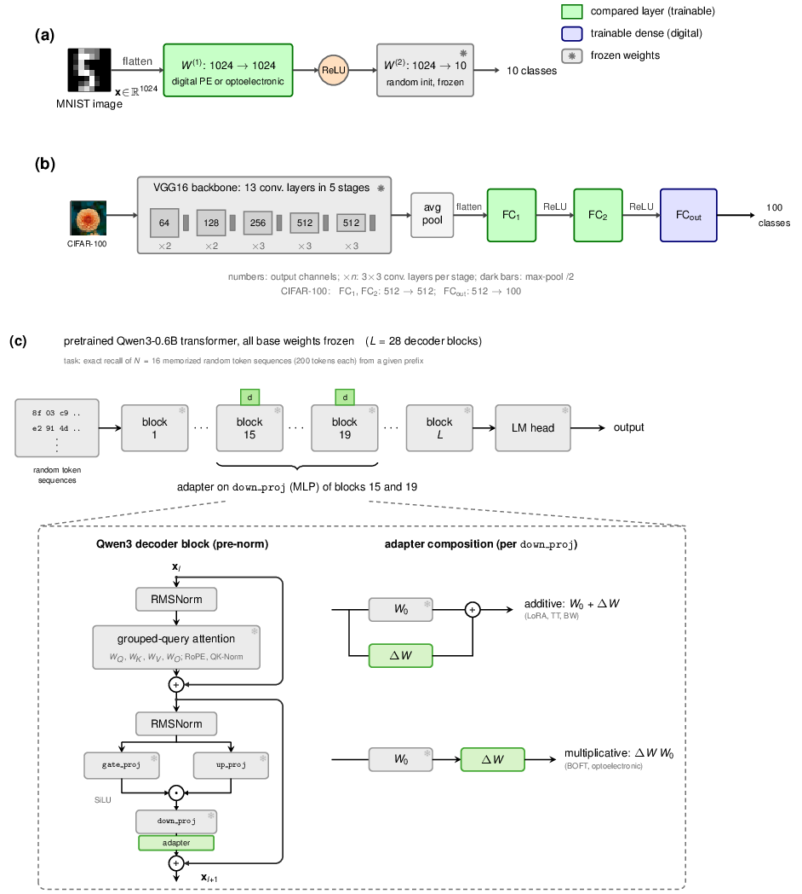
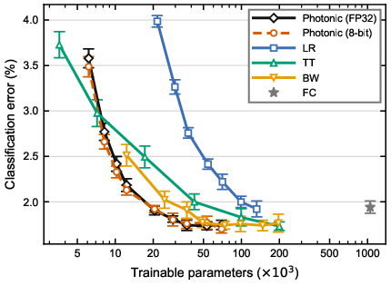
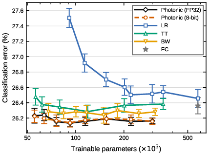
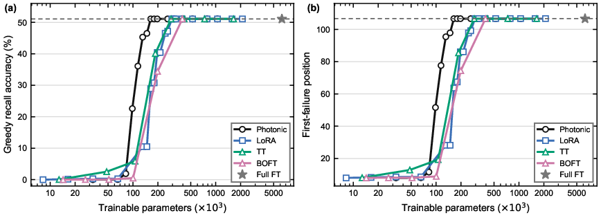
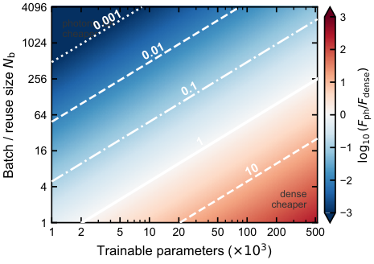
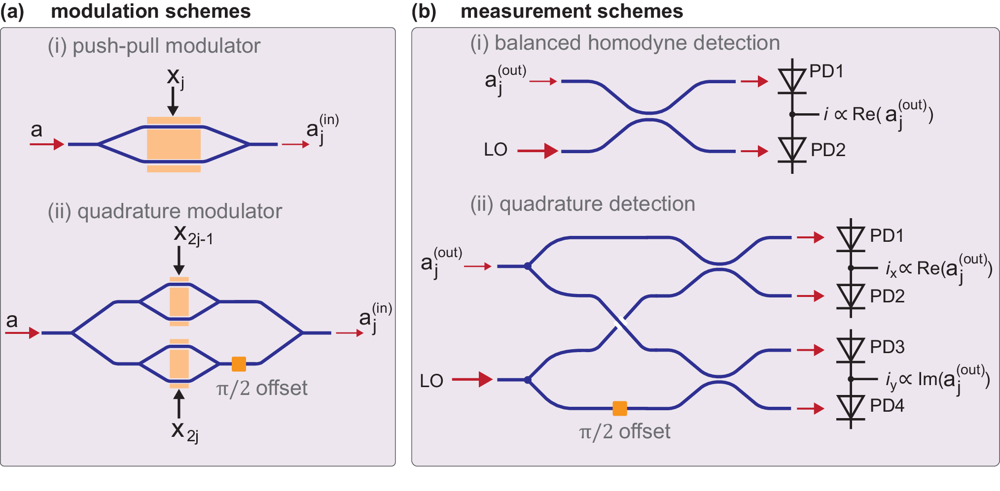

基于可编程光子网格的参数高效神经计算
摘要
存储容量与带宽正日益成为神经网络计算的主要约束，促使人们寻求可减少模型存储与数据移动的参数高效表示。张量网络方法已经能够大幅压缩神经网络，但其结构化运算往往与面向稠密线性代数优化的传统处理器不相匹配。这类表示可以用光子硬件实现，不过通常需要针对特定分解设计专门的光学架构。本文提出一种不同的方案，其基础是可编程光子网格。紧凑的电子参数决定干涉仪相位，而光学干涉则产生稠密且一般为高秩的变换。由于参数化仍保持在电子域，因此无需改动光路即可改变其维数与结构。端到端训练中的数值实验表明，所提出的光子层可达到甚至优于经过强压缩的张量列车（tensor-train）层与砖砌（brickwork）层，且可训练参数往往更少。在语言模型参数高效微调中的实验同样显示出相对于既有数字适配器的优势。可训练状态的缩减降低了常驻存储需求，并有望减少数据移动与带宽开销。
1 引言
现代神经网络高度依赖大型线性变换，其存储与执行占用了很大一部分访存流量与计算开销。模型规模的持续增长使存储容量与带宽日益成为关键约束，从而推动了大量有关参数高效表示的研究，包括低秩分解、张量网络、结构化矩阵以及参数高效微调方法[1, 2, 3, 4, 5]。这类构造能大幅减少可训练参数数量，从而降低权重、梯度和优化器状态所需的存储。
然而，参数高效并不必然意味着在传统数字处理器上的高效执行。结构化层通常用一连串较小的矩阵乘积和张量收缩来取代大型稠密矩阵乘法。视表示形式与实现方式而定，这些运算可能面临硬件利用率不足、额外数据重排以及中间访存流量等问题[6, 7, 8, 9]。精心设计的收缩算法与专用硬件能够缓解这些局限[10]。尽管如此，表示形式的紧凑性与其执行效率仍是两个不同的考量。
可编程光子学提供了实现线性变换的另一种方式。光传播与干涉直接执行矩阵乘法，无需将该操作分解为电子乘累加指令。由可编程双模元件构成的多模干涉仪能够实现任意酉变换，并已成为光子计算的成熟构建模块 [11, 12, 13, 14, 15]。近期的数值研究还考察了 Transformer 自注意力中的衍射光学乘法，报告了光学误差容忍度，以及附加可训练光学元件带来的任务性能提升 [16]。
多种方法已将参数高效的神经表示与光子硬件相结合。Xiao 等人提出了张量化光学神经网络，其中张量列分解通过级联光子核心实现 [17]。其他方法通过限制所实现变换的类别来减少物理光学元件的数量。这些方法包括紧凑干涉网格 [18]、蝶形光学架构 [19]，以及基于结构化矩阵压缩的光子张量核心 [20]。此类架构可大幅降低光学硬件需求，但其物理组织方式与所选矩阵结构或分解方式密切相关。
本文采用一种不同的方法：保留通用可编程多模干涉仪，同时在其电子控制表示中引入参数高效性。我们并非独立优化所有干涉仪相位，而是从规模小得多的可训练参数集生成这些相位。于是，尽管电子表示紧凑，光干涉仍产生稠密、通常高秩的变换。由于参数化仍为电子形式，其维度和结构可在不修改光路的情况下改变。因此，所提方法在保留完整物理相位控制集的同时，减少了独立可训练模型状态。
我们在从头训练和参数高效微调两种情形下评估该方法。数值实验表明，在较大的参数预算范围内，所提出的光子层能够匹配或优于强压缩的张量列层和砖墙式层。语言模型适配实验还表明，在更少的可训练参数数量下，与包括 LoRA 和 BOFT 在内的成熟数字适配器相比，其性能表现良好。这些结果表明，可编程光干涉能够生成紧凑参数化的神经变换，而无需对所实现算子进行显式张量分解。
2 参数高效光子矩阵乘法
我们考虑线性神经网络层的光子实现，重点关注其可训练参数与所实现光学变换之间的关系。两种传统光子架构之间的区别促使我们采用本文方法：逐元素乘法器，其中各个控制决定各个矩阵元素；以及干涉网格，其中传输矩阵集体依赖于所有相位设置。
2.1 通用光子乘法器
光子处理器通过光传播和干涉实现线性变换。对于传输矩阵为 的实值线性层，其中 表示可编程设置，输入向量 的变换为
| (1) |
在神经网络中，同一变换通常应用于多个激活向量。将 个输入向量收集为 的行，相应的批处理操作变为
| (2) |
光学处理器执行各个向量变换，而 指定在相同配置下处理的向量数。

逐元素架构，例如图 1(a) 所示的微环权重库，提供了一种实现给定矩阵 [21] 的直接方式。每个矩阵元素由对应的光学元件控制，示意为 。因此，一旦已知 的元素，就可在不将矩阵分解为光学变换的情况下对其进行编程。
然而，这种直接可编程性对于从紧凑的可训练参数集合构造稠密变换并没有内在优势。紧凑表示必须首先以电子方式求值，以获得全部 个矩阵元素，然后再将其传输到光学控制。因此，光学硬件执行乘法，而稠密矩阵的构造仍保持为数字方式。
通用干涉网格提供了另一种可能性。如图 1(b) 所示的矩形 Clements 架构由可调谐马赫–曾德尔干涉仪和移相器组成 [12]。对于 个光学模式，完整的网格包含 个独立相位控制，并能实现任意酉变换 。
与逐元素乘法器不同，网格中各个相位设置与矩阵元素之间没有直接对应关系。其传输矩阵通过重复分束、相位累积和干涉，以复杂的非线性方式依赖于这些相位。这使得对给定酉矩阵进行编程在计算上更为复杂，因为必须先确定其到干涉仪设置的分解 [22]。然而，对于参数高效神经层，同一性质变得有用。我们不再计算给定稠密矩阵所需的相位，而是从一组紧凑的可训练参数直接生成这些相位。干涉仪随后通过光学干涉产生所得的稠密变换。这一原理构成了下文所述构造的基础。
2.2 参数高效光子乘法器

图 2 说明了所提出的混合层。通用干涉仪保留其 个物理相位控制，但这些控制不被视为独立的可训练变量。相反，其值由具有 个分量的紧凑电子参数向量 生成。因此，持久可训练状态（包括相应的梯度与优化器变量）的规模随 而非 缩放。
对于这里所考虑的实现，电子参数被排列成两个矩阵 和 ，它们定义潜控制矩阵
| (3) |
干涉仪相位由逐元素非线性映射生成
| (4) |
其中，为方便起见， 个相位值被排列成 数组。
重要的是，秩约束作用于潜矩阵 ，而不是物理相位矩阵 。非线性映射通常不保持秩，所得光学变换 是稠密且高秩的。因此，紧凑电子表示不会对神经变换施加相应的低秩约束，尽管它限制了可及算子的族。
独立可训练参数的数量为
| (5) |
其中秩 控制参数预算，而不改变物理干涉仪。构造新配置需要电子乘积 ，其成本约为 次浮点运算（FLOPs）。该成本在每次重新编程时产生一次，并可分摊到多个输入向量上。其与常规稠密、低秩和张量列执行的比较见附录 A。该比较不包括光传播以及加载相位设置的物理成本。
3 基线参数高效层
我们将所提出的光子层与四种参数高效基线进行比较，总结于图 3。对于端到端训练，低秩（LR）[4]、张量列（TT）[23] 和砖砌（BW）[24] 层替换相应的稠密线性变换。对于微调，我们将所提出的乘性光子适配器与加性低秩适配器 LoRA [4] 以及乘性正交适配器 BOFT [5] 进行比较。所有基线构造的详细定义和参数数量见附录 C。
LR 基线将方阵权重矩阵分解为
| (7) |
使用 个可训练参数。所提出的光子层使用相同的双因子构造来生成 潜在控制矩阵，而不是分解所实现的神经变换。因此，与传统 LR 层的比较将干涉式参数到权重映射的影响与底层紧凑电子表示的影响隔离开来。在微调中，低秩构造以加性方式应用，
| (8) |
这对应于 LoRA。

TT [23] 和 BW [24] 基线则用结构化张量网络表示权重矩阵。TT 使用低秩张量核心链，而 BW 使用按交替最近邻层排列的局部四路核心。它们的参数预算分别通过 TT 秩和砖砌深度变化。两种构造都为稠密矩阵提供了紧凑的结构化替代方案，而不施加式 (7) 的简单秩约束。
对于乘性微调，我们使用 Hugging Face PEFT 库中实现的 BOFT。BOFT 通过蝶形置换连接的分块正交因子来表示适配器。在我们的实验中，其参数预算通过 BOFT 块大小变化，而其余 BOFT 配置保持固定。所报告的参数计数是实例化 PEFT 适配器的实际可训练参数计数。按照此处使用的约定，
| (9) |
因此 BOFT 为所提出的光子适配器提供了一个结构化、正交、乘性的基线。与 LoRA 不同，其参数效率由架构结构施加，而不是由秩约束施加。

4 结果
我们在三个神经网络基准（测试集）中评估所提出的参数高效光子层，涵盖从随机初始化开始训练和预训练模型适配两种情况（图 4）。第一个基准（测试集）考虑两层 MNIST-10 分类器，其中所比较的参数化替代单个稠密线性变换。第二个基准（测试集）使用冻结的预训练 VGG16 主干和包含两个参数高效层的可训练分类头，考察 CIFAR-100 上的分类。在这两种情况下，我们将光子实现与传统 LR、TT 和 BW 层进行比较，并使用可训练参数数量作为模型复杂度的主要度量。第三个基准（测试集）通过受控序列记忆任务考察 Qwen3-0.6B 的参数高效微调，将所提出的光子适配器与 LoRA、TT 和结构化正交适配方法进行比较。
数值实验还考察了光子参数化对有限相位分辨率的灵敏度。除标准 FP32 实现外，我们还考虑 8 位量化，其动机来自高精度与量化光子计算方面的实验进展 [21, 25]。对于光子层，潜在矩阵 及随后的 sigmoid 变换以 FP32 评估，而量化应用于所得的干涉仪相位设置。训练期间，通过量化操作的梯度使用直通估计器（STE）估计 [26]。
对于 MNIST-10 和 CIFAR-100 基准（测试集），每个配置使用十个随机种子进行训练。报告的分类误差是这些运行的平均值，误差棒表示一个标准差。序列记忆基准（测试集）则使用一组固定的随机词元（Token）序列，不进行重复运行。因此，其结果刻画了所比较适配器在所研究任务实例和训练设置下的参数效率。所有用于训练和微调神经网络的数值实验均在 PyTorch 中进行，并在具有 GB 内存的 NVIDIA A100 GPU 上执行。
4.1 端到端训练：两层 MNIST 分类器
第一个基准（测试集）考察从随机初始化开始训练的参数高效层的性能。每张 MNIST 图像由一个维输入向量表示，并由两层分类器处理，如图4(a)所示。第一个变换使用所提出的光子层或其中一个数字基线实现，随后是线性整流单元（ReLU）激活和一个冻结的、随机初始化的输出层。因此，所得分类误差为用于可训练变换的表示提供了直接比较。
图5展示了十个随机种子上的平均测试误差和标准差随可训练参数数量的变化。稠密参考达到误差，约需个参数。在最小的参数预算下，TT 层提供的表示比光子层更准确。然而，曲线在约个参数处交叉，超过该点后，光子层在重叠的参数范围内表现出更低的平均分类误差。在个参数时，全精度光子层已经与稠密参考相匹配，达到误差。将参数预算增加到可将误差降低到，而最低平均误差是在个参数时获得的。
张量网络基线在更大的参数预算下达到相近的准确度。砖墙（BW）层达到误差时使用个参数，达到时使用个参数。TT 层随着秩的增加持续改善，最终达到，此时参数约为。因此，两种张量网络表示都达到了与光子层相当的准确度，但后者达到这一性能范围所需的参数约为 BW 的 1/2，约为 TT 的 1/5.4。最低误差之间的差异与其标准差相比很小。传统低秩层在该基准（测试集）中效率较低，其报告的最低误差为，此时使用个参数。
有限相位分辨率对观测性能影响很小。在位光子实现中，潜在矩阵和sigmoid变换以FP32计算，仅对所得干涉仪相位进行量化。在个参数时，量化层的误差达到，而全精度为。8位实现的最低平均误差为，对应个参数。因此，在数值实验的统计变异性范围内，将相位量化到8位不会导致分类准确度的系统性下降。

4.2 在 CIFAR-100 上的端到端训练

第二个基准考虑在 CIFAR-100 上的分类，使用卷积层冻结的预训练 VGG16 网络，如图 4(b) 所示。所得的维特征向量由可训练分类头处理，该分类头包含两个变换，每个变换后接层归一化（LayerNorm）和线性整流单元（ReLU），以及一个最终的稠密输出层。前两个变换由所比较的参数高效结构替换。因此，该实验在多层级神经网络中测试它们的性能，同时保留相同的预训练特征表示。
图 6 给出了十个随机种子上的平均测试分类误差。稠密分类头达到误差，使用个可训练参数。所提出的光子分类头已经达到，使用个参数，这相当于完整分类头的可训练参数约减少至十分之一。提高光子秩会带来适度的进一步改善，获得最低平均误差，对应个参数。
张量列车（TT）基线对参数预算表现出不同的依赖关系。砖墙（BW）层仅使用 个参数就已达到 误差，增加其深度仅带来准确度的适度变化。其最低平均误差 是在使用 个参数时获得的。相比之下，张量列车层随秩增加而改善，达到其最低误差 ，此时使用 个参数。因此，两种张量网络表示均取得了有竞争力的分类性能，尽管光子层以少得多的参数达到了相当的准确度。特别地，光子分类头已达到 误差，使用 个参数，比最佳 BW 结果所需参数约少 2.7 倍。最低分类误差之间的差异相对于随机种子间的变异性仍然很小，不应过度解读。传统低秩层的效率明显更低，需要大得多的参数预算，同时准确度仍低于光子层和张量网络层。
结果对相位量化也显著不敏感。在整个所研究的参数范围内，全精度和 8-bit 光子曲线始终保持接近。在 个参数下，相应的误差分别为 和 。因此，数值结果表明，当编程的相位设置被限制为 8-bit 精度时，所提出的光子参数化仍保持其分类性能。
4.3 微调：使用 Qwen3 进行序列记忆

最终基准（测试集）评估预训练的 Qwen3-0.6B 语言模型 [27] 的参数高效微调，所采用的任务为受控的序列记忆任务 [28]。模型在 条长度为 的随机词元（Token）序列上训练，并将可训练适配引入 Transformer 块 15 和 19 的 down_proj 模块中。其余所有预训练参数保持冻结。序列记忆协议、适配器实现和评估指标的更多细节见附录 D。
比较包括所提出的光子适配器、LoRA、TT 适配、BOFT，以及对两个选定投影矩阵的全参数微调。LoRA 和 TT 对矩形预训练权重矩阵引入加性更新。TT 适配器采用内部秩可变的四核表示。相比之下，光子适配器和正交适配器采用乘性变换。光子实现采用 个光学模式和正交编码，作用于 维实数表示。
图 7 给出了贪心召回准确度和平均首次失败位置随可训练参数总数变化的函数关系。随着参数预算增加，所有方法都表现出从可忽略的召回率到显著改善的记忆能力的明显转变。对于此处考虑的固定序列集，观测到的最高贪心召回准确度约为 ，平均首次失败位置为 。对两个选定的稠密矩阵进行全参数微调也能达到这一水平。
这些方法之间的主要差异在于达到该性能所需的参数预算。光子适配器在 个可训练参数时达到观测到的平台。相应的参数数量对于 TT 约为 ，对于 LoRA 约为 ，对于 BOFT 约为 。全参数微调参考需要 个参数。因此，与 TT 和 LoRA 相比，光子适配器以约少 倍的可训练参数达到相同的观测记忆水平；与 BOFT 相比少 倍；与稠密微调参考相比少 倍。
在饱和之前，这一优势也很明显。在约 个参数时，光子适配器达到 的贪心召回准确度和 的平均首次失败位置。在基本相同的参数数量下，LoRA 达到 的召回率和 的平均首次失败位置。TT 适配器仅在更大的参数预算下才接近可比的召回率。因此，光子参数化不仅以更少的可训练变量达到观测到的平台，而且在更小的参数数量下表现出向成功记忆的转变。
这些结果提供了证据，表明可编程干涉仪的紧凑电子参数化可以作为传统低秩、张量网络和结构化正交适配器的有效替代方案。然而，记忆基准使用单组固定随机序列，未进行重复训练运行。因此，所报告的阈值应解释为针对所研究任务实例和优化设置的结果，而不是对各适配器族记忆能力的普遍估计。
5 讨论与展望
数值结果表明，可编程光子干涉仪能够提供参数高效的神经变换，其性能可与强压缩的数字表示相竞争。在端到端训练中，所提出的光子层在 MNIST-10 上以约少倍的可训练参数达到与稠密参考模型相匹配的性能，而在 CIFAR-100 上，分类头的相应参数减少约为十倍。TT 层和 BW 层提供了强数字基线，并最终达到相当的分类准确度。然而，光子层通常以更少的可训练参数实现这一性能。在 Qwen3-0.6B 的微调中，光子适配器在参数比 TT 和 LoRA 少约 1.8 倍、比 BOFT 少 2.4 倍的情况下，达到了通过优化两个选定的稠密投影矩阵所得到的参考模型的已观测记忆性能。后一组结果仅涉及一组固定的随机序列，因此并未确立这些表示的记忆容量的一般限制。
与传统结构化层的区别在于稠密变换的生成方式。张量网络表示通过较小张量的收缩[2, 3]来表示大算子。在所提出的方法中，紧凑的电子表示决定多模干涉仪的相位设置，而所得的变换通过光学干涉产生。低秩约束作用于潜在电子矩阵，而不是作用于相位设置或光学传输矩阵。因此，所实现的神经变换不限于秩，尽管紧凑参数化限制了可实现的变换族。一旦建立相位设置，干涉仪就实现所得的变换，而无需重复评估紧凑电子表示。构建新配置的电子成本及其在多个输入向量上的摊销在附录A中分析。
减少可训练参数的数量会直接降低权重、梯度和优化器状态所需的持久电子内存。随着存储容量和数据移动在神经网络计算中日益成为重要约束，这一优势尤其重要[29, 30]。数值结果还表明，将干涉仪相位设置限制为 8 位精密度并不会导致分类准确度的系统性下降。然而，这一观察针对的是在 FP32 中评估电子参数化之后施加的相位量化，并未考虑光学损耗、相位噪声或校准误差。因此，实际硬件优势仍有待通过实验确定。通用干涉仪保留了其 个物理相位控制，为这些物理相位控制构造设置可能需要临时内存按 扩展。此外，附录 A 中的计算估计排除了相位加载、器件稳定、校准以及光学输入和输出接口。可实现的延迟、能耗和内存带宽降低将取决于这些额外成本，以及在光学配置连续更新之间处理的输入向量数量。
当前方法与通过限制光学变换本身来获得参数效率的光子架构互补。Xiao et al. 提出了使用级联光子核心实现的张量列分解 [17]，而其他方法采用紧凑干涉网络、蝶形架构或结构化矩阵压缩 [18, 19, 20]。此类设计可以减少光学元件数量及相关硬件复杂度，但其物理组织与所选因子分解或矩阵结构密切相关。这里的参数效率是在电子表示中引入的，而干涉仪保留其完整的可编程元件集。因此，可以在同一物理处理器上探索不同的参数预算和电子映射的函数形式。将紧凑电子表示与复杂度降低的光学架构相结合，为未来工作提供了另一方向。
扩展光学处理器仍是一项核心挑战。神经网络层通常作用于具有数百或数千个分量的向量，而实验上演示的通用干涉仪仍然小得多[31, 32, 33]。分块提供了一条通向更大有效变换的途径：将矩阵划分为较小的块，顺序或并行求值，随后累加[34]。更大的模式空间也可以通过利用额外的光学自由度获得。可编程频率变换以及结合空间与频率模式的处理已被演示[35, 36]。时间 bin 编码提供了另一种可能。Basani et al. 最近提出了一种在合成时间维度上的通用光子处理器，利用动态可重构连接来减少物理组件的数量[37]。这些方法提供了在不按比例增加空间端口的情况下实现更大有效变换的途径，不过其实际效率将取决于光学损耗、控制开销以及时间或光谱复用所需的资源。
这里考虑的低秩电子映射仅代表一种可能的参数化方式。在参数预算相当的情况下，更具表达力的表示可能提升性能，而深度降低且容错的干涉仪可能放宽对器件尺寸和稳定性的要求[38, 39, 40, 41]。将这些方法与光学损耗、相位误差和校准不确定度的现实模型相结合，是迈向实验验证的重要一步。
更广泛地说，这些结果表明，可编程光学干涉能够生成紧凑参数化的神经变换，而无需将所实现的算子显式分解为张量网络。这为在保持通用可编程光学处理器灵活性的同时实现参数效率提供了一种替代物理机制。要确定这些特性是否能转化为实际硬件优势，将需要对编程开销、光学损耗以及总能量和延迟进行实验评估。
附录 A 参数高效线性层的电子复杂度
本附录比较正文所考虑的参数高效表示的电子成本。该比较有意限制在执行于电子方式的操作上。对于光子层，我们仅计入用于构造潜在相位控制矩阵的矩阵乘积，
| (10) |
并且不包括相位非线性的求值、将所得值传输到光学电路、移相器稳定、校准或光学矩阵–向量乘法。因此，该分析的目的不是估计光子加速器的端到端延迟，而是量化每当可训练参数更新时构造新的光子层所需的电子算术和内存开销。
在本附录中，一次浮点乘法和一次浮点加法计为两次浮点运算（FLOPs）。我们用表示在一个固定层配置下处理的输入向量数量。在小批量训练期间，自然对应于批大小（或者更一般地，对应于在下一次参数更新前复用相同权重的激活向量数量）。在推理期间，是一个复用因子，不必与软件小批量大小一致。我们对这一量使用而不是，以避免与式（10）中的因子矩阵混淆。
A.1 主阶浮点运算次数
稠密层。
对于稠密矩阵和批次，乘积在主阶上需要
| (11) |
稠密层包含个可训练参数。
低秩层。
For
| (12) |
该乘法按如下方式计算
| (13) |
因此，参数数量和浮点运算次数分别为
| (14) | ||||
| (15) |
张量列矩阵层。
张量列（TT）格式由 Oseledets[23]提出。本文使用的神经网络基线遵循 Novikov等[1]的 TT 矩阵表示：对于，权重矩阵由成对的输入/输出核心表示
| (16) |
其中。这种四路成对核心表示也常被称为张量列矩阵（TTM），见于近期的硬件和张量化训练文献[42]。正文中我们保留较短的术语“TT 层”，但在本附录讨论其算术复杂度时使用“TTM”，以便将其与把矩阵分解为个三路核心的其他 TT 分解区分开。
可训练参数的数量为
| (17) |
Let
| (18) |
对于将该 TT 矩阵与显式稠密激活向量进行的标准分阶段收缩，第个核心在主阶上对每个输入向量贡献次标量乘法。因此，对于个稠密输入向量，
| (19) |
其中因子 2 将一次乘法和一次加法计为两次浮点运算。该表达式与 Novikov等推导出的 TT 矩阵乘显式向量复杂度一致，[1]。在本工作的方形均匀设置中，、和，从而每个向量给出次运算。
同样的缩放关系可直接从 Tian等[42]近期的复杂度分析中读出。对于均匀模态尺寸和秩，其 TTM 训练复杂度与成正比；约 3 的因子来自前向和后向收缩。确定、、和后，前向贡献的缩放为
| (20) |
次标量乘法。由于对于均匀内部秩
| (21) |
这与式（19）在乘法到浮点运算转换之前的主阶乘法次数相同。
式（19）因此应被解释为采用稠密激活的标准成对核心 TT 矩阵/TTM 收缩的代价，这也是本工作所基准测试的表示。它不是对每一种被称为“张量列”的算法都成立的、与表示无关的下界。收缩顺序和硬件调度会实质性改变冗余计算、中间存储和数据移动的量。TIE [8] 推导出一种计算高效的 TT 推理方案，旨在为其 TT 格式深度神经网络（DNN）计算达到理论最少乘法次数；而 ETTE [9] 进一步协同设计收缩顺序和硬件数据流，以减少逐阶段计算、中间存储和数据移动。Tian et al. 还比较了 TTM 与一个 核 TT 表示，并引入了一种具有不同复杂度缩放的双向 TT 收缩 [42]。这些结果促使我们在解析浮点运算次数（FLOPs）计数之外，还报告实测的中央处理器/图形处理器（CPU/GPU）运行时间。
最后，如果激活本身以 TT 形式保存，复杂度会有所不同。原始 TT 文献分析 TT 算子–TT 向量运算，其代价依赖秩，与此处考虑的显式稠密向量情形并不相同 [23]。
光子层：仅电子构造。
对于光子层，持久可训练状态由式（10）中的两个薄矩阵组成，
| (22) |
新的层配置需要矩阵–矩阵乘积 ，其电子算术代价为
| (23) |
该代价在每次重新编程时支付一次，并且在本比较范围内与 无关。所得变换的光学执行被有意排除。
A.2 在匹配可训练参数数量下的比较
为了将参数效率与特定秩选择的细节区分开，在共同的可训练参数预算下比较三种紧凑表示是有用的，
| (24) |
| (25) | ||||
| (26) | ||||
| (27) |
稠密参考仍为
| (28) |
用稠密 FLOPs 计数归一化会得到特别清晰的表达式，
| (29) | ||||
| (30) | ||||
| (31) |
因此，低秩层和 TTM 层的电子代价随处理向量数线性增长，而光子层的 构建代价只支付一次，并通过复用来摊销。
与紧凑数字层对应的比值分别为
| (34) | ||||
| (35) |
因此，在匹配 时，与低秩实现的交叉点出现在
| (36) |
而与 TTM 实现的交叉点出现在
| (37) |
对于二值张量化 ，在匹配参数数量下，构建一次 的 FLOPs 代价等于将 TTM 层应用于一个稠密输入向量的代价。任何进一步复用都会相对于 TTM 收缩降低摊销后的光子电子代价。
这些关系仅用于比较浮点运算次数（FLOPs）。它们并不意味着实际运行效率相同，因为稠密 GEMM、窄 GEMM 与 TTM 收缩所能达到的中央处理器（CPU）或图形处理器（GPU）峰值吞吐量比例可能相差很大。
A.3 内存核算
令表示存储一个参数所用的字节数（FP32 为，FP16/BF16 为）。持久参数存储为
| (38) | ||||
| (39) | ||||
| (40) | ||||
| (41) |
因此，光子表示与参数数量相同的普通因子化表示一样，保留了紧凑的持久电子状态。
计算式（10）还会产生一个矩阵。 若将该结果物化到内存，则乘积本身占用
| (42) |
因此，构造具有紧凑的持久参数存储，但在重新编程期间具有临时/输出内存占用。精确的峰值分配取决于 BLAS 后端、工作区需求，以及输出是整体构造还是分块构造。因此，数值基准（测试集）在运行时提供此类信息时，同时报告持久模型存储和实测峰值临时分配。
对于低秩和 TTM 执行，瞬态激活内存同样取决于实现方式和批大小。特别地，TT 表示可能具有较小的持久参数数量，但在收缩期间会创建更大的中间张量。因此，峰值运行时内存与参数存储分开测量，而不是仅由推断。
A.4 复杂度权衡
上述表达式区分了两种不同的成本。数字结构化层必须对每个输入向量计算其因子化表示，而本文考虑的光子层相关的电子成本是在构造新的光学配置时产生的。因此，后一种成本可以分摊到下一次重新编程之前处理的所有向量上。以下比较针对说明这一区别。除非另有说明，紧凑表示在匹配的可训练参数数量下进行比较，并且张量列基线使用二值张量化（）。
图 8 显示了主导的电子浮点运算次数，其归一化为与稠密 矩阵相乘，作为使用同一配置处理的向量数量 的函数。低秩层和 TTM 层的归一化成本与 无关，因为二者的算术成本与稠密参考均随输入向量数线性缩放。相反，构造光子控制矩阵的成本在每次重编程时仅支付一次，因此其归一化贡献随 而减小。
对于具有代表性的光子参数化 ，与稠密电子乘法的比值降为
| (43) |
因此，对于 ，一旦同一配置被复用于超过约十二个输入向量，构造新光子配置所需的运算量便小于应用该稠密矩阵所需的运算量。该比较仅涉及控制矩阵的电子构造；不包括光传播以及干涉仪的物理编程。
对可训练参数预算的依赖关系如图 9 所示。在复用次数 固定时，三种紧凑表示的电子运算成本均与 成线性关系，但系数差异显著：
| (44) |
因此，相对排序不仅由参数数量决定，也由紧凑表示的求值方式决定。特别地，TTM 表示可以只需极少的持久参数存储，但在作用于显式稠密激活向量时仍会带来可观的运算成本。相反，光子层的电子构造成本与随后使用所得光学配置处理的向量数无关。

同一依赖关系可以在 平面中更直接地表示。图 10 显示了
| (45) |
等值线 将形成 所需的电子浮点运算次数少于对所有 个向量进行稠密乘法的区域，与所需运算次数更多的区域分开。额外的等值线量化了逐步增强的算术摊销。例如， 表示光子配置的电子构造占相应稠密电子乘法所需浮点运算次数的一百分之一。
该映射的对角结构使底层缩放关系变得清晰：增大可训练参数预算会提高重编程成本，而增大复用次数则会以相同因子降低其摊销贡献。因此，相关工作区间同时取决于模型压缩以及参数更新之间处理的向量数。
解析的 FLOP 计数并不直接决定实际执行时间，因为稠密 GEMM、瘦长矩阵乘积和分阶段张量收缩在传统处理器上的效率可能差别很大。因此，我们在配备 AMD Ryzen 9 3900X CPU、64 GB RAM 和 NVIDIA GeForce RTX 3080 GPU 的工作站上，使用 FP32 算术对相应的 PyTorch 实现进行基准测试。对于稠密层、低秩层和 TTM 层，测量时间包括处理一批 个稠密激活向量的时间。对于光子层，仅包括一次隐控制矩阵 的构建，因此与 无关。不包括相位传递、器件稳定、校准、光传播、调制和探测。
图 11 表明，实测运行时间可能与标称 FLOP 缩放关系有很大差异，尤其是在 GPU 上。对于稠密层， 情形表现为利用率较低的矩阵-向量运算。增大 会将其转变为效率更高的 GEMM，因此尽管运算次数更大，运行时间最初可能下降。一旦 GPU 得到充分利用，在本基准中批大小为数百量级时，运行时间开始随 增长。
TTM 层在较小和中等 下表现出更宽的近似恒定运行时间区间。其分阶段收缩由若干较小的矩阵乘积和张量布局操作组成，因此最初由内核启动开销和利用率不足主导。增大 会提高这些内核的效率，随后算术和内存流量成为主导，之后运行时间增加。
光子曲线的含义不同： 乘积是一次性重编程成本。因此，复用同一光学配置不会增加其电子构建时间，而数字参考层必须处理每一个额外的激活向量。这说明为什么参数数量、FLOP 数量和实测运行时间应被视为不同的量。
最后，图 12 将算术成本与持久模型存储联系起来。横轴仅包含可训练参数。对于 字节的数值表示，紧凑层需要 字节，而稠密 矩阵需要 字节。可训练状态的同样缩减在训练期间也会传播到梯度和优化器变量，尽管其精确内存占用取决于优化器和数值精度。
这一持久内存比较应与峰值工作内存区分开。特别地，显式构造 会产生一个 矩阵，因此在重新编程期间需要一个 输出缓冲区。类似地，张量收缩可能产生远大于所存储 TTM 核心的中间张量。因此，图 12 表征的是持久可训练状态与算术成本之间的权衡，而不是系统总峰值内存。
附录 B 干涉仪与光学接口细节
B.1 Clements 干涉仪
作为一种特定的酉网格，我们考虑 Clements et al. [12] 的矩形架构，如图 1b 所示。 模式 Clements 干涉仪包含作用于相邻模式的 层马赫–曾德尔干涉仪（MZI），总共 个 MZI。每个 MZI 由两个平衡（50:50）耦合器和两个移相器组成：内部相位设定 分束比，外部相位设定 两个模式的相对相位。一列 个单模移相器构成完整电路。
该网格的传输矩阵为
| (46) |
其中 是对角输出相位层， 是第 个 MZI 层。每一层是相互对易的最近邻块之乘积，
其中 除一个作用于模式 和 的 块外等于单位矩阵。在我们的约定中，该块为
| (47) |
连同 个输出相位 ，该网格包含 个可编程相移，与酉群的 个实自由度相匹配。因此，通用电路不能由更少的独立参数来指定。为记号方便，我们将完整的 个相移按固定顺序排列成一个 数组 ，定义为
| (48) |
其中右侧表示相位向量的拼接。我们用 作为简写，表示用这些相位值编程的网格传输矩阵。采用附录 B.2 中描述的实值编码时，相应的神经线性变换由 得到。
B.2 实值编码与检测

干涉网格在复值酉矩阵的范围内工作，从而实现对其输入端口所引入的复场振幅向量的变换，如下式所示
| (49) |
相比之下，常规神经网络层的输入和输出信号通常是实值的。因此，光学乘法器需要一种编码方案，将实值输入向量映射到光学振幅上，同时还需要一种测量方案，用于恢复实值输出向量（由得到）。这一需求催生了两种主要编码方法，用于将酉干涉仪用作实值矩阵乘法器。这两种编码如图 13所示，其中展示了图(a)中用于将编码到输入场的光学调制方案，以及图(b)中用于在电子域将输出光场转换回的相应测量方案。
(i) 每个场振幅对应一个向量元素。在第一种编码方案中，每个光学场振幅承载单个实值向量元素。输入场被制备为实振幅（），而每个输出场在单个正交分量上测量，（）。因此，所得有效实值矩阵在（1）中为
| (50) |
注意在(6)中，矩阵不要求为酉矩阵。物理上，为实现该编码，输入振幅可用推挽式幅度调制器设置（图 13a 中的方案(i)）。输出场通过平衡零差检测测量（图 13b 中的方案(i)），其中每个输出场在平衡耦合器上与强本地振荡器合束，所得两光电流之差正比于与本地振荡器同相的场正交分量。
(ii) 每个场幅度对应两个向量元素。在第二种编码方案中，每个复场幅度表示两个实值向量元素，每个正交分量各一个。输入幅度编码为 ，而输出分量根据 和 （）恢复。因此，模的干涉网格可实现对维度为 的实向量的变换。两个输入正交分量使用正交调制器制备，其中两个推挽式幅度调制器在马赫–曾德尔调制器的两臂中并行工作，臂间具有固定的 相位偏移（图 13a 中的方案(ii)）。在输出端，每个场被均分到两个平衡零差接收器，其本地振荡器相位相差 ，从而可同时测量两个正交分量（图 13b 中的方案(ii)）。
对应的有效 实表示（针对 ）是一个正交矩阵，由 个块组成，这些块表示 的元素：
| (51) |
因此， 的酉性蕴含 。
这两种方案在收发机简易性与有效映射结构之间进行权衡。第一种方案要求每个向量元素使用一个调制器和一个零差接收器。代价是 不保持范数——该方案可达到的映射恰好是谱范数至多为 1 的实矩阵。第二种方案使收发机硬件加倍，但其正交映射在数据通过该层时保持欧几里得范数，这支持深度网络中的稳定信号传播。
附录 C 基线参数高效层的细节
本附录给出第 3 节所总结的数字参数高效层的显式构造。记号沿用该节；除非另有说明，变换均为维度为 的方阵变换。
C.1 低秩层
低秩基线分解为
| (52) |
and therefore contains
| (53) |
可训练参数。在端到端训练中，这种分解直接替代稠密权重矩阵。在参数高效微调中，相同构造用作对冻结预训练矩阵的加性更新，对应于 LoRA [4]。
C.2 张量网络表示
对于张量网络基线，我们将层维度分解为
| (54) |
并将 重塑为 阶张量
| (55) |
对应的线性映射为
| (56) |
其中对重复指标求和。压缩通过将 表示为低阶张量的收缩得到。
C.3 张量列层
C.4 砖砌张量网络层
砖砌层使用一个深度为的张量网络，该网络由作用于相邻张量模对的四路核组成。逐层改变配对模式，产生图 3(c) 所示的交替局部连接。
完整权重张量写为
| (60) |
其中对中间张量指标的缩并是隐含的。每个层张量 分解为
| (61) |
作用于相邻模对。对于偶数 ，奇数层配对 ，而偶数层使用移位后的配对 以及边界对 。
由于 个层中的每一层包含 个四路核，可训练参数的数量为
| (62) |
数值实验中的参数预算通过砖砌深度 来变化。
C.5 正交蝶形微调
对于乘性参数高效微调，我们使用 BOFT [5]，其通过 Hugging Face PEFT 库中的 BOFT 适配器实现。BOFT 由通过固定蝶形置换连接的稀疏块正交因子构造正交变换。
对于输入特征维度 ，每个因子包含 个大小为 的正交块。若使用 个蝶形因子，则独立正交自由度的有效数量为
| (63) |
其中 是块大小。因此，在固定 和 时，增大 会增加适配器的容量。
示意性地，该变换可写为
| (64) |
其中 表示固定蝶形置换， 是使用 Cayley 参数化由可训练变量生成的正交块。
BOFT 适配器以乘性方式作用于冻结的预训练层。按照本工作使用的矩阵约定，
| (65) |
输入特征维度记为 而不是 ，因为预训练层不必是方阵。实验中，我们改变 boft_block_size 以改变 BOFT 参数预算，同时保持其余配置固定。图中报告的参数计数是实例化 PEFT 适配器的实际可训练标量计数；而式 (63) 给出的是独立正交自由度。
附录 D 使用 Qwen3 的序列记忆基准（测试集）
本附录提供第4.3节所使用的序列记忆基准（测试集）的细节。该基准（测试集）的目的是检验参数高效更新存储预训练模型中未包含信息的能力。参照文献 [28]，我们使用合成词元（Token）序列的精确记忆作为参数记忆的受控度量。使用合成数据是为了最小化语言结构、语义关联以及预训练模型中已有知识的影响。
D.1 记忆任务
我们使用预训练的 Qwen3-0.6B 模型 [27]。语言模型将文本表示为从有限词表抽取的离散词元（Token）序列。对于本基准（测试集），我们不使用自然语言文本，而是生成 个随机词元序列，
| (66) |
each of length .
在微调期间，预训练模型参数保持固定，仅优化参数高效适配器以存储生成的序列。在评估期间，向模型提供已存储序列的开头，并要求其自回归地复现其余词元。生成采用贪心解码：在每个位置，选择模型赋予最高概率的词元。所得生成序列记为
| (67) |
该任务不同于传统的下游语言模型基准（测试集），因为成功表现不需要语义理解或对未见示例的泛化。相反，它考察可训练参数能够多高效地编码并恢复一个规定的有限数据集。
D.2 适配器放置与参数化
尽管任务的输入和输出是离散词元，Transformer 在内部对连续激活向量进行运算。相同的线性变换会独立应用于与每个词元位置相关联的激活。因此，序列长度控制线性层被求值的次数，但不改变相应矩阵–向量乘法的维度。
在基准（测试集）中，参数高效适配器被引入 Transformer 块 和 的 down_proj 模块，而所有预训练 Qwen3-0.6B 参数保持冻结（见图 4c）。原生下投影矩阵的维度为 。基准（测试集）中比较的参数高效构造为这些模块实现与这些模块相关联的 个可训练变换 。
对于所提出的光子适配器， 维实激活采用第 B.2 节中的保范编码（ii）表示。每个复光学振幅中编码两个实分量，因此相应的酉干涉仪包含 个光学模式。利用本工作通篇使用的因子化控制映射，一个光子适配器因此包含
| (68) |
个可训练参数。由于适配器被插入两个 Transformer 块，总光子参数数为
| (69) |
LoRA 和 BOFT 基线被应用于相同的两个位置。对于此处考虑的 变换，秩为 的 LoRA 适配器在每个被适配层中包含 个可训练参数。图 7 中报告的参数数是两个被适配 Transformer 块上的总数。
作为参照，完全微调会更新两个原生的 下投影矩阵，对应约 个可训练参数。
D.3 记忆化指标
我们使用贪心召回准确度和首次失败位置来量化记忆化。
贪心召回准确度 是在贪心解码下正确复现的目标词元所占比例，
| (70) |
其中 为 Kronecker delta。因此， 对应于数据集中每个词元的完美复现。
词元平均准确度无法区分孤立错误与早期错误后跟一长段错误续写的情况。因此，我们还测量首个解码错误的位置。对于序列，
| (71) |
当完整序列被无错误复现时，。报告的首次失败位置均值为
| (72) |
因此，越大，表示在首个错误之前被精确复现的前缀越长。
References
- [1] (2015) Tensorizing neural networks. In Advances in Neural Information Processing Systems (NeurIPS), pp. 442–450. External Links: Document, 1509.06569, Link Cited by: §A.1, §A.1, §C.3, §1.
- [2] (2025) Tensor networks meet neural networks: a survey and future perspectives. External Links: 2302.09019, Link Cited by: §1, §5.
- [3] (2026) Tensor methods for language models: from token representation to training, adaptation, inference, compression, and interpretability. External Links: 2608.30505, Link Cited by: §1, §5.
- [4] (2022) LoRA: low-rank adaptation of large language models. In International Conference on Learning Representations (ICLR), External Links: 2106.09685, Link Cited by: §C.1, §1, §3.
- [5] (2024) Parameter-efficient orthogonal finetuning via butterfly factorization. In The Twelfth International Conference on Learning Representations, External Links: Link Cited by: §C.5, §1, §3.
- [6] (2022) Monarch: expressive structured matrices for efficient and accurate training. In Proceedings of the 39th International Conference on Machine Learning, Proceedings of Machine Learning Research, Vol. 162, pp. 4690–4721. External Links: Link Cited by: §1.
- [7] (2022) Realistic acceleration of neural networks with fine-grained tensor decomposition. Neurocomputing 512, pp. 52–68. External Links: Document Cited by: §1.
- [8] (2019) TIE: energy-efficient tensor train-based inference engine for deep neural network. In Proceedings of the 46th Annual International Symposium on Computer Architecture (ISCA), pp. 264–278. External Links: Document Cited by: §A.1, §1.
- [9] (2023) ETTE: efficient tensor-train-based computing engine for deep neural networks. In Proceedings of the 50th Annual International Symposium on Computer Architecture (ISCA), pp. 950–962. External Links: Document Cited by: §A.1, §1.
- [10] (2024) Compute better spent: replacing dense layers with structured matrices. External Links: 2406.06248, Link Cited by: §1.
- [11] (1994) Experimental realization of any discrete unitary operator. Physical Review Letters 73 (1), pp. 58–61. External Links: Document Cited by: §1.
- [12] (2016) Optimal design for universal multiport interferometers. Optica 3 (12), pp. 1460–1465. External Links: Document Cited by: §B.1, §1, Figure 1, Figure 1, §2.1.
- [13] (2015) Universal linear optics. Science 349 (6249), pp. 711–716. External Links: Document Cited by: §1.
- [14] (2018) Linear programmable nanophotonic processors. Optica 5 (12), pp. 1623–1631. External Links: Document Cited by: §B.1, §1.
- [15] (2017) Deep learning with coherent nanophotonic circuits. Nature Photonics 11 (7), pp. 441–446. External Links: Document Cited by: §1.
- [16] (2026) Poster Abstract: Optical Transformers can Outperform Digital Models: A Preliminary Accuracy Study . In 2026 ACM/IEEE International Conference on Embedded Artificial Intelligence and Sensing Systems - Posters and Demos (SenSys-Adjunct), Vol. , Los Alamitos, CA, USA, pp. 129–130. External Links: ISSN , Document, Link Cited by: §1.
- [17] (2021) Large-scale and energy-efficient tensorized optical neural networks on III–V-on-silicon MOSCAP platform. APL Photonics 6 (12), pp. 126107. External Links: Document Cited by: §1, §5.
- [18] (2022) Scalable and compact photonic neural chip with low learning-capability-loss. Nanophotonics 11 (2), pp. 329–344. External Links: Document Cited by: §1, §5.
- [19] (2022) A compact butterfly-style silicon photonic–electronic neural chip for hardware-efficient deep learning. ACS Photonics 9 (12), pp. 3906–3916. External Links: Document Cited by: §1, §5.
- [20] (2025) Hardware-efficient photonic tensor core: accelerating deep neural networks with structured compression. Optica 12 (7), pp. 1079–1089. External Links: Document Cited by: §1, §5.
- [21] (2022) Silicon microring synapses enable photonic deep learning beyond 9-bit precision. Optica 9 (5), pp. 579–584. External Links: Document, Link Cited by: §2.1, §4.
- [22] (2025) Complexity-energy trade-off in programmable unitary interferometers. External Links: 2507.22972, Link Cited by: §2.1.
- [23] (2011) Tensor-train decomposition. SIAM Journal on Scientific Computing 33 (5), pp. 2295–2317. External Links: Document, Link Cited by: §A.1, §A.1, §3, §3.
- [24] (2023) Tensor networks for quantum machine learning. Proceedings of the Royal Society A 479 (2275), pp. 20230218. External Links: Document Cited by: §3, §3.
- [25] (2026) High-speed electro-optic engine for a quantized photonic neural network. Optica 13, pp. 236–246. External Links: Document, Link Cited by: §4.
- [26] (2018) Quantization and training of neural networks for efficient integer-arithmetic-only inference. In Proceedings of the IEEE Conference on Computer Vision and Pattern Recognition, pp. 2704–2713. External Links: Document, Link Cited by: §4.
- [27] (2025) Qwen3 technical report. External Links: 2505.09388, Link Cited by: §D.1, §4.3.
- [28] (2026) How lora remembers? a parametric memory law for llm finetuning. External Links: 2605.30260, Link Cited by: Appendix D, §4.3.
- [29] (2024) AI and memory wall. IEEE Micro 44 (3), pp. 33–39. External Links: Document, Link Cited by: §5.
- [30] (2020) Memory devices and applications for in-memory computing. Nature Nanotechnology 15 (7), pp. 529–544. External Links: Document, Link Cited by: §5.
- [31] (2023) 20-mode universal quantum photonic processor. Quantum 7, pp. 1071. External Links: Document, Link Cited by: §5.
- [32] (2025) An integrated large-scale photonic accelerator with ultralow latency. Nature 640, pp. 361–367. External Links: Document, Link Cited by: §5.
- [33] (2025) Large-scale calibration-free Mach–Zehnder networks. In 2025 Optical Fiber Communications Conference and Exhibition (OFC), Vol. , pp. 1–3. External Links: Document Cited by: §B.1, §5.
- [34] (2023) Analog nanophotonic computing going practical: silicon photonic deep learning engines for tiled optical matrix multiplication with dynamic precision. Nanophotonics 12 (5), pp. 963–973. External Links: Document, Link Cited by: §5.
- [35] (2022) Enabling scalable optical computing in synthetic frequency dimension using integrated cavity acousto-optics. Nature Communications 13, pp. 5426. External Links: Document, Link Cited by: §5.
- [36] (2024) Hyperspectral in-memory computing with optical frequency combs and programmable optical memories. Optica 11 (7), pp. 932–939. External Links: Document, Link Cited by: §5.
- [37] (2026) Hardware-efficient universal linear transformations for optical modes in the synthetic time dimension. PRX Quantum 7, pp. 020305. External Links: Document, Link Cited by: §5.
- [38] (2020) Optimal design of error-tolerant reprogrammable multiport interferometers. Opt. Lett. 45 (9), pp. 2632–2635. External Links: Link, Document Cited by: §5.
- [39] (2020) Robust architecture for programmable universal unitaries. Phys. Rev. Lett. 124, pp. 010501. External Links: Document, Link Cited by: §5.
- [40] (2026) Low-depth two-unitary design of programmable photonic circuits. Phys. Rev. Res. 8, pp. 013021. External Links: Document, Link Cited by: §5.
- [41] (2024) Lower-depth programmable linear optical processors. Phys. Rev. Appl. 21, pp. 014054. External Links: Document, Link Cited by: §5.
- [42] (2026) Ultra memory-efficient on-FPGA training of transformers via tensor-compressed optimization. IEEE Transactions on Computer-Aided Design of Integrated Circuits and Systems 45 (3), pp. 1352–1365. External Links: Document Cited by: §A.1, §A.1, §A.1.